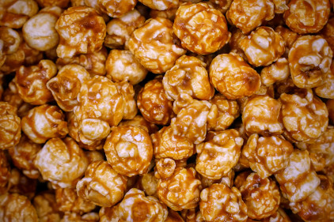

Pipoca Doce
Ingredientes
- 1 xícara de pipoca
- 1 xícara de açúcar
- ½ xícara de óleo
- ½ xícara de água
- leite em pó
- achocolatado
Modo de Preparo
- Com o fogo desligado , coloque a pipoca, açúcar, óleo a água e mexa até dissolver o açúcar.
- Tampe e ligue o fogo no médio, quando começar a ferver, dê mais uma mexida e tampe novamente.
- Depois que todos os milhos estourarem, sirva a pipoca em uma vasilha e adicione colheres de leite em pó e achocolatado.